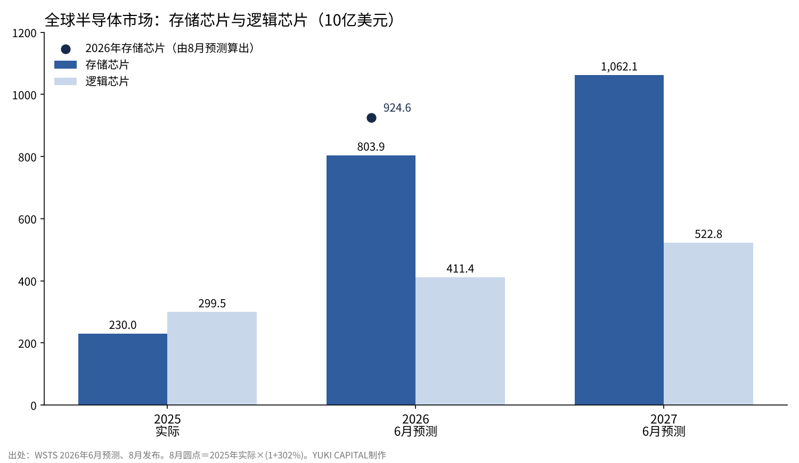
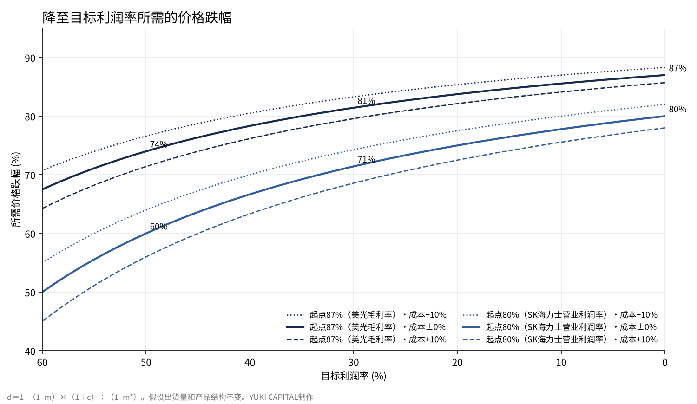

存储芯片的利润率，能承受价格下跌几成——从美光、SK海力士和铠侠的财报倒推
世界半导体贸易统计组织（WSTS）在2026年6月预测，全球存储芯片市场将从2025年的2,300亿美元增至2026年的8,039亿美元，扩大3.5倍[1]。在8月的发布中，它又把2026年的增长率上调到302%[2]。
同一时期，美光科技的毛利率达到87.0%，SK海力士的营业利润率达到80%[3][4]。铠侠7至9月的非公认会计准则营业利润率也达到80.2%[6]。
本文提一个问题：现在存储芯片的利润率，销售价格下跌几成之前还能保持盈利？我从财报数字倒推，并改变前提给出一个区间。

问题与背景
先定义四个词。DRAM是在计算过程中临时存放数据的半导体存储器，断电后内容消失。NAND是断电后内容仍能保留的闪存，用于SSD和智能手机的存储。HBM（高带宽存储器）是把DRAM垂直堆叠、放在AI运算芯片旁边、拓宽数据通道的产品。毛利率是指销售收入减去制造成本后的剩余部分占销售收入的比例。
存储芯片一向被视为景气波动很大的行业。建厂需要数年，而产品接近标准品，一旦供给超过需求，价格就会急剧下跌。
之所以把问题放在价格跌幅上，是因为比起利润率本身的高低，能承受多大的降价，更能衡量下一次下行周期的深度。
数据与方法
本文使用五份一手资料：WSTS的2026年春季预测（6月2日）和第二季度发布（8月6日）[1][2]，美光向美国证券交易委员会提交的2026财年第四季度财报（9月30日，季度截至9月3日）[3]，SK海力士2026年第三季度财报（10月27日）[4]，以及韩国产业通商部和科学技术信息通信部发布的2026年9月ICT进出口动向（10月14日）[5]。铠侠2026年7至9月的数字用报道补充[6]。
计算用一个公式。设利润率为m、制造成本为C、销售价格为P，则m＝1−C÷P。当价格下跌比例d、成本变化比例c时，使新利润率变为m*所需的跌幅为d＝1−（1−m）×（1＋c）÷（1−m*）。
这个公式把整家公司视为一个产品，并假设出货量和产品结构不变。SK海力士和铠侠没有以同样形式列出毛利率，所以用营业利润率代替计算。营业利润率是扣除销售费用等之后的比例，因此算出的降价空间比用毛利率计算时更小。
结果：市场与三家公司的数字
| 项目 | 数字 | 出处 |
|---|---|---|
| 全球存储芯片市场2025年（实际） | 2,300亿美元（同比+39.0%） | WSTS[1] |
| 全球存储芯片市场2026年（6月预测） | 8,039亿美元（+249.5%） | WSTS[1] |
| 全球存储芯片市场2027年（6月预测） | 10,621亿美元（+32.1%） | WSTS[1] |
| 存储芯片2026年（8月预测的增长） | +302%（约为2025年的4.0倍） | WSTS[2] |
| 美光2026财年第四季度（截至9月3日）营收 | 542.3亿美元（上年同期113.2亿美元） | 财报[3] |
| 美光毛利率（非公认会计准则） | 87.0%（下一季度指引86.25%） | 财报[3] |
| SK海力士7至9月营收 | 104.6万亿韩元（同比+328%） | 财报[4] |
| SK海力士营业利润率 | 80%（上年同期47%） | 财报[4] |
| 铠侠7至9月营收 | 约1,055.96亿元人民币（约157.26亿美元） | 报道[6] |
| 铠侠非公认会计准则营业利润率 | 80.2% | 报道[6] |
| 韩国半导体出口2026年9月 | 603.3亿美元（同比+262.8%） | 韩国政府[5] |

从整个市场看，预计2026年存储芯片的规模约为逻辑芯片的2倍[1]。2025年存储芯片还小于逻辑芯片，一年之内位次就会互换。
公司的数字也指向同一方向。美光2026财年营收为1,331.9亿美元，是上一财年373.8亿美元的3.6倍[3]。SK海力士在7至9月单季营收首次突破100万亿韩元[4]。
上涨还没有停止。美光预计下一季度（12月初截止）营收约615亿美元、毛利率约86.25%，也就是利润率基本持平，营收再上一个台阶[3]。
国家统计也显示了同样的动向。韩国2026年9月信息通信领域出口为751.5亿美元，其中半导体占603.3亿美元[5]。仅半导体就占信息通信领域出口的约八成，相当于上年同月的3.6倍。
铠侠的数字几乎可以用涨价乘以出货增长来解释。据报道，7至9月的平均售价比上一季度上涨了20%中段，出货量增长了10%出头[6]。1.25×1.12约为1.40，与营收增加额约303.55亿元人民币（约45.21亿美元）除以上一季度约752.41亿元人民币（约112.05亿美元）得出的约40%基本一致。

结果：价格跌到几成之前仍能盈利
| 起点利润率 | 降至利润率50% | 降至利润率30% | 降至利润率0%（盈亏平衡） |
|---|---|---|---|
| 美光毛利率87.0% | 74% | 81% | 87% |
| SK海力士营业利润率80% | 60% | 71% | 80% |
| 铠侠营业利润率80.2% | 60% | 72% | 80% |
假设成本不变，美光在价格下跌87%之前都还有毛利。SK海力士和铠侠也要价格下跌约80%，营业利润才会消失。仅仅把利润率降到30%，价格也需要下跌约七到八成。
敏感性分析

| 成本变化 | 美光87%→30% | SK海力士80%→30% | SK海力士80%→0% |
|---|---|---|---|
| −10%（量产推进使成本下降） | 83% | 74% | 82% |
| 0%（不变） | 81% | 71% | 80% |
| +10%（新工厂折旧等使成本上升） | 80% | 69% | 78% |
| +30%（转向最先进制程使成本大幅上升） | 76% | 63% | 74% |
把前提改变成四种情况，所需跌幅也不低于六成。即使在成本上升30%的严峻情况下，要把SK海力士的营业利润率降到30%，也需要价格下跌63%。
在这个公式里起作用的，是利润率本身的高度。起点利润率超过80%时，成本不到销售收入的两成。成本变动一成，相对于销售收入也只变动2%左右。
讨论
相反的看法有两种。第一种是供给会增加。美光2026财年的资本支出为273.7亿美元，SK海力士也表示2027年将大幅增加投资[3][4]。新工厂投产后，价格可能以上涨时同样的速度回落。
第二种是平均数掩盖了内部结构。HBM和服务器产品的价格由合同决定，而智能手机和电脑用的通用产品价格由市场决定。即使全公司利润率为80%，单看通用产品，降价空间或许要小得多。
另一方面，需求被合同锁定也是事实。SK海力士已与14家主要客户签订了大多为期五年的长期协议，覆盖了2027至2028年一半以上的产能[4]。该公司认为到2030年供给都赶不上需求[4]。
数据的局限也很明确。三家公司都没有公开各产品的单价，本文的计算是从全公司利润率倒推出的参考值。WSTS在半年内大幅改写了2026年的增长率，预测本身也在变动[1][2]。
检验标准设三个：美光下一季度（12月初截止）的毛利率能否保持在指引的86.25%[3]；WSTS下一次预测会把2027年存储芯片的增长率从32.1%上调还是下调[1]；韩国半导体出口的同比增速每个月放缓到什么程度[5]。
结论
从财报倒推，现在的三家存储芯片厂商在销售价格下跌六到八成之前都能保持盈利。把成本从−10%调到+30%，这个结论也不变。
SK海力士和铠侠的营业利润率跌破50%，也要等到价格下跌六成的时候。
因此，即使下一次下行周期到来，离亏损也还有很长的距离。比起利润能否留下，更该问的是价格以多快的速度回落，而决定这一点的是长期合同的期限和新工厂投产的时间。
我是这样看的
我没有持有任何一家半导体公司的股票。我认为AI公司会经历把钱投入设施的投资阶段，和去获取利润的回收阶段。现在存储芯片的数字表明，我们正处在投资阶段的中间。
我认为随着芯片性能提高，生产的一方迟早会站到过剩的一边。11月4日铠侠一度下跌13%时，我也没有什么特别的感觉。我持有的是在回收阶段赚钱那一边的AI公司，看到这些数字，我也不改变配置。
参考文献
- 世界半导体贸易统计组织（WSTS）“WSTS Semiconductor Market Forecast Spring 2026”2026-06-02 https://www.wsts.org/esraCMS/extension/media/f/WST/7618/WSTS_FC-Release-2026-May.pdf
- 世界半导体贸易统计组织（WSTS）“WSTS Q2 2026 Release”2026-08-06 https://www.wsts.org/esraCMS/extension/media/f/WST/7745/WSTS-Q2-Release-2026-08-06.pdf
- Micron Technology“Form 8-K Exhibit 99.1：Fiscal Q4 2026 results”2026-09-30 https://www.sec.gov/Archives/edgar/data/0000723125/000072312526000018/a2026q4ex991-pressrelease.htm
- SK hynix“SK hynix Announces 3Q26 Financial Results”2026-10-27 https://www.placera.se/pressmeddelanden/sk-hynix-announces-3q26-financial-results-20261028
- 韩国产业通商部、科学技术信息通信部“2026年9月ICT进出口动向”2026-10-14（KDI经济信息中心转载） https://eiec.kdi.re.kr/policy/materialView.do?num=288070
- Business+IT“铠侠2026年7至9月财报”2026-10-30 https://www.sbbit.jp/article/st/187973
照片：Laura Ockel、Taylor Vick（Unsplash）。图表由YUKI CAPITAL制作
每天的数字和判断，我都记录在X上。